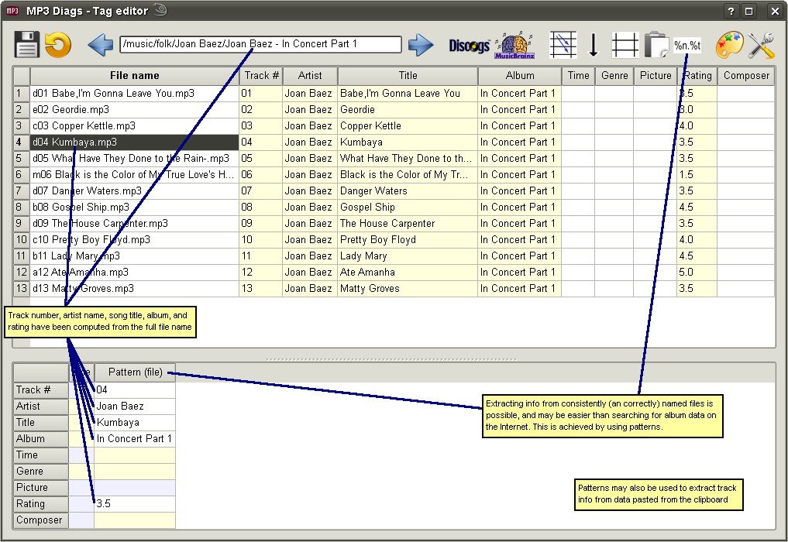

In addition to tags stored inside an MP3 file, song information can also be obtained using patterns. In the Tag Editor's context there are 2 kinds of patterns: "file name - based" and "text line - based"; they are used to extract track information from a file's name or from pasted text, respectively. Information retrieved from patterns is displayed alongside that from MP3 tags, in the "current file" table. A pattern is a sequence of characters, the main idea being that a '%' followed by some letters is a placeholder, corresponding to a field, while the other characters are used to separate placeholders from one another. These are the supported placeholders:
| %n | - track number |
| %a | - artist |
| %t | - title |
| %b | - album |
| %y | - year |
| %g | - genre |
| %r | - rating (a lowercase letter) |
| %c | - composer |
| %i | - ignored (there's no field that would take this value) |
Besides these sequences, there are usually "static text" sequences in a pattern. An example: consider the file named
/music/mp3/pop/artist1/album1 (2008)/02 second track.mp3
and the pattern
%g/%a/%b (%y)/%n %t
For the given file name, this pattern retrives these fields:
| genre: | pop |
| artist: | artist1 |
| album: | album1 |
| year: | 2008 |
| track number: | 02 |
| title: | second track |
Note that the matching is done from the end of the file name, so the beginning of the name (/music/mp3) doesn't matter. The pattern would get the same fields for a file named /pop/artist1/album1 (2008)/02 second track.mp3 or /home/user/media/music/mp3/pop/artist1/album1 (2008)/02 second track.mp3.
If a pattern contains the character
/, it is "file name - based", otherwise it is "text line - based". Besides the source of the text (file name vs. clipboard), another difference is that latter must match perfectly the text, while the former may have errors in any of the strings between consecutive
/ characters and still extract some fields from other parts of the file name. In the example above the pattern
%g/%a/%b {%y}/%n %t would return no album or year, because
album1 (2008) doesn't contain
 {
{ or
}, but would still find the genre, the artist, the track number and the title.
Both kinds of patterns are edited in the "Patterns" dialog. Only valid patterns can be saved. Besides the rather obvious % followed by a character that is not part of the placeholder list above, there's another condition that causes a pattern to be invalid, namely 2 consecutive "unbound placeholders": %n, %y and %r have a fixed format, but the rest are unbound, meaning that they would take any characters as long as there's nothing to tell them where to stop. With 2 unbound placeholders there's no way to tell where one should end and the other should begin. So %a%t is invalid (as is any pattern containing it), while %a-%t is valid, because - is used to identify where the artist name ends and the track title begins. However, %y%t is valid, because %y is a 4-digit number.
Patterns may have optional parts, which are delimited by "[" and "]". One optional part may be embedded in another. (See the predefined patterns for examples.)
Some reasons to use patterns even if you find album info on the Internet
Your file names may contain more accurate information than what you find online, especially for genre, year, or composer.
Your may dislike the character case (upper / lower / ...) of what you find.
Your may want to adopt my system of including a song's rating in the file: I use a lowercase letter ("a" for 5 stars, "b" for 4.5 stars, ...) before the track number, which has the advantage that it doesn't need any player support (as long as you play files from the disk, and not from its library.) If I ever move to a player that supports the POPM frame (which is where the rating is stored inside ID3V2), I can easily pull the rating from the file name by using a pattern.